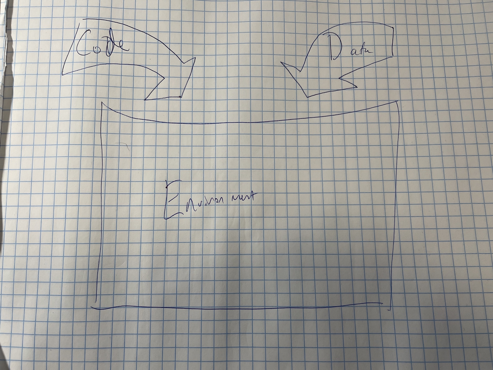
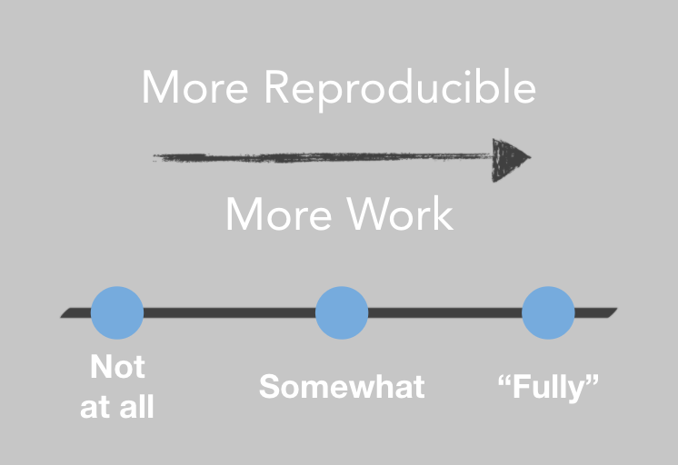

# Check if dplyr installed
if (!"dplyr" %in% row.names(installed.packages())) {
# install if not
install.packages("dplyr")
}2 Environments as Code
I like to think of doing data science much like producing a delicious meal. In my data, I have the raw ingredients I’ll slice, dice, and recombine to make something great, and my code is the recipe I’ll follow to get there.1
Novice cooks generally think that their prep is done once they’ve gathered their ingredients and recipes. They’ll grab a tomato and chop/smush it with whatever dull butter knife happens to be at hand. But that’s not how the pros think. A pro probably has a knife just for tomatoes and they frequently – perhaps every time they use it – hone it to razor sharpness so they can slice paper-thin slices off even the mushiest tomato.

Regardless of your proficiency in the kitchen, you’re a pro (or aiming to be one) at data science. In this chapter, we’re going to talk about the data science equivalent of prepping your knives in your kitchen – actively managing your data science environments using code.
Kitchen metaphors aside, your data science environment is the stack of software and hardware below the level of your code, from the R and Python packages you’re using right down to the physical hardware your code runs on.
Most data scientists are like novice cooks, and think little – or not at all – about the readiness of their environment and the sharpness of their tools. One of the primary results of this is the oft-spoken, and dreaded phrase, “well, it works on my machine” after attempting to share code with a colleague or deploy an app into a different environment.
Some people who read this will just throw up their hands and say, “well, it’s impossible to make things completely reproducible, so I’m not going to bother”. And they’re right about the first part. Trying to craft an environment that’s completely reproducible is somewhat of a fool’s errand.

There’s a tradeoff. Making things more reproducible is generally takes more work – in a way that’s frustratingly asymptotic.
Some industries are highly-regulated and need to be able to guarantee they can reproduce an analysis exactly – down to the layer of machine instructions – a decade later. In this world, the general reproducibility practice for an analysis is to take a physical piece of hardware that they know runs the analysis, make a backup or two, and just keep that physical piece of hardware running for many years.
But you don’t have to go all the way there – making things 100% reproducible is really, really hard. But making things a little more reproducible is really quite easy.
The first step towards making environments more reproducible is by starting to create Environments as Code. In the DevOps world, the aim is to create environments that are largely “stateless” – functionally identical copies of any environment can be created and destroyed at whim using code.
The glib, but useful shorthand for the idea of Infrastucture or Environments as code is that they should be “cattle, not pets” – interchangeable one for the other.
In this chapter, we’ll get into the why and how of capturing a data science environments in code, saving them for later, and easily moving them around from place to place.
2.1 Environments have layers
When you first start thinking about environments, it can be hard to wrap your head around. The environment seems like a monolith and it can be hard to figure out what the different components are.
I generally think of three layers in the data science environments – and these are in order, each layer of the environment is actually built on the ones below. Once you understand the layers of an environment, you can think more clearly about what your actual reproducibility needs are, and which environmental layers you need to target putting in code.
| Layer | Contents |
|---|---|
| Packages | R + Python Packages |
| System | R + Python Language Versions Other System Libraries Operating System |
| Hardware | Virtual Hardware Physical Hardware |
Note that your code and your data are not the environment – they are what the environment is for. As you’re thinking about reproducibility, I’d encourage you to think about how they fit inside the environment and how they might be reproduced.2 But we’re not going to address them in this book.
For most data scientists, the biggest bang for buck is getting the package layer right. In a lot of organization another team entirely will be responsible for the system and hardware layers, but the package layer is always your responsibility as the data scientist. Moreover, managing that layer isn’t terribly hard, and if you get it right, you’ll solve a huge fraction of the “runs on my machine” issues you’re likely to encounter.
2.1.1 Package environments as code
A successful package Environment as Code setup has two key attributes:
- Your package environment is isolated and cannot be disrupted by other activities on the same machine.
- Your package environment can easily be captured and transported elsewhere.
Before we get to what a good Environment as Code setup looks like, let’s dive into what bad setups look like.
In a lot of cases, data scientists have the habit of starting a project, and when they need to install packages, they just run an install.packages command in their console or pip install in their terminal. This works fine for a while. But the problem with this is that the default has you installing things into a cache that’s shared among every project on your system.
What happens if you come back to a project after a year and you’ve been installing things into your machine-wide package cache the whole time. It’s very possible you won’t have the right versions and your code will break.
The other problem happens when it comes time to share a project with others. It’s not uncommon to see an intro to an R script that looks something like:
ACK! Please don’t do this!
Number one, this is very rude. If someone runs your code, you’ll be installing packages willy-nilly into their system. Additionally, because this doesn’t specify a version of the {dplyr} package, it doesn’t even really fix the problem!
2.1.2 Step 1: Standalone Package Libraries
As a data scientist, you’ve very familiar with installing packages from a repository using the install.packages command in R or pip install or conda install in Python. But do you really understand what’s happening when you type that command?
Let’s first level set on what are the various states for R or Python packages. There are three states packages can be in – and we’re going to go back to our data science as cooking analogy.
Packages can be stored in a repository, like CRAN or BioConductor in R or PyPI or Conda in Python. You can think of a package in a repository like food at the grocery store – it’s packaged up and ready to go, but inert. Setting aside groovy bodegas with eat-in areas, you don’t get to eat at the grocery store. You’ve got to buy the food and take it home before you can use it – and you’ve got to install the food before you can use it.
And then your library is your pantry, where you keep a private set of packages, bespoke to you and the food you like to cook – the projects you’re likely to do. Loading a package with a library or import command is like taking the food out of the pantry and putting it on the counter so you can actually cook with it.
[Diagram of package states]
By default, when you install an R or Python package, that package installs into user space. That means that it installs into a package library that is specific to your user, but is shared among every time that package is used by you on the machine.
This isn’t a disastrous situation, but it is a recipe for package incompatibilities down the road.
[TODO: diagram of user-level vs project level installs]
The most important thing to understand about package libraries is that libraries can only have one version of any given package at a time. So that means that if I have code that relies on version 1.0 of a given package and I install a new version of that package, version 1.0 is gone and I am likely to run into package incompatibility issues.
It’s for this reason that you want to have standalone package libraries for each project on your system. Hopefully, you already have good practices around having each project in a standalone directory on your system and making a git repo in that system. Now just make the base directory of that directory a standalone library as well.
What if I have multiple content items?
In many data science projects, you’ve got multiple content items within a single project. Maybe you have an ETL script and an API and an app. After a lot of experimenting, my recommendation is to create one git repo for the whole project and have content-level package libraries.
This is not a rule or anything…just a suggestion about how I’ve found it works best over time.
[TODO: Add image]
2.1.2.1 What’s really happening?
I happen to think the grocery store metaphor for package management is a useful one, but you might be wondering what the heck is actually happening when you’re using {renv} or {venv}. How does this package magic happen?
First, let’s quickly go over what happens when you install or load a package.


Whenever you install a package, there are two key settings that R or Python consult – the URL of the repository to install from and the library to install to. And similarly, when you load an R or Python library, the install checks the library location. In R, the command used is .libPaths() and in python it’s sys.path.
So you can see that it’s (conceptually) pretty simple to create a standalone package library for any project – when the virtual environment is activated, just make sure that the project level library is what comes back when checking the library path.
You can see it pretty easily in R – if I run .libPaths() before and after activating an {renv} environment, the first entry from the .libPaths() call changes from a user level library /Users/alexkgold to a project level library /Users/alexkgold/Documents/do4ds/.
.libPaths()
[1] "/Users/alexkgold/Library/R/x86_64/4.2/library"
[2] "/Library/Frameworks/R.framework/Versions/4.2/Resources/library"
renv::activate()
* Project '~/Documents/do4ds/docker/docker/plumber' loaded. [renv 0.15.5]
.libPaths()
[1] "/Users/alexkgold/Documents/do4ds/docker/docker/plumber/renv/library/R-4.2/x86_64-apple-darwin17.0"
[2] "/Library/Frameworks/R.framework/Versions/4.2/Resources/library" Similarly in Python, it looks like this – note that the after version replaces the last line of the sys.path with a project-level library:
❯ python3 -m site
sys.path = [
'/Users/alexkgold/Documents/python-examples/dash-app',
'/Library/Developer/CommandLineTools/Library/Frameworks/Python3.framework/Versions/3.8/lib/python38.zip',
'/Library/Developer/CommandLineTools/Library/Frameworks/Python3.framework/Versions/3.8/lib/python3.8',
'/Library/Developer/CommandLineTools/Library/Frameworks/Python3.framework/Versions/3.8/lib/python3.8/lib-dynload',
'/Library/Developer/CommandLineTools/Library/Frameworks/Python3.framework/Versions/3.8/lib/python3.8/site-packages',
]
USER_BASE: '/Users/alexkgold/Library/Python/3.8' (doesn't exist)
USER_SITE: '/Users/alexkgold/Library/Python/3.8/lib/python/site-packages' (doesn't exist)
ENABLE_USER_SITE: True
❯ source .venv/bin/activate
(.venv)
❯ python3 -m site
sys.path = [
'/Users/alexkgold/Documents/python-examples/dash-app',
'/Library/Developer/CommandLineTools/Library/Frameworks/Python3.framework/Versions/3.8/lib/python38.zip',
'/Library/Developer/CommandLineTools/Library/Frameworks/Python3.framework/Versions/3.8/lib/python3.8',
'/Library/Developer/CommandLineTools/Library/Frameworks/Python3.framework/Versions/3.8/lib/python3.8/lib-dynload',
'/Users/alexkgold/Documents/python-examples/dash-app/.venv/lib/python3.8/site-packages',
]
USER_BASE: '/Users/alexkgold/Library/Python/3.8' (doesn't exist)
USER_SITE: '/Users/alexkgold/Library/Python/3.8/lib/python/site-packages' (doesn't exist)
ENABLE_USER_SITE: False
(.venv)2.1.3 Step 2: Document environment state.
Using standalone package libraries for each project ensures that your projects remain undisturbed when you come back to them months or years later and keeps your work reproducible.
But it doesn’t solve the sharing problem.
That is, you still need some help when it comes time to share an environment with someone else. So how does that work?
[TODO: image – anatomy of a lockfile]
Both R and Python have great utilities that make it easy to capture the current state of a library into a lockfile or requirements.txt and to restore those libraries later or somewhere else.
In R, {renv} is the standard on this front. In Python, there are many different options. In the context of production data science, I recommend {virtualenv}/{venv} and related tools.
Now, when you share your project with someone else, your lockfile or requirements.txt goes along for the ride. Sometimes people are dismayed that their library doesn’t go along as well and that people have to install the packages themselves – but this is by design!
One – package libraries can be very small, so putting just a short lockfile or requirements file into git is definitely preferred. The other reason is that the actual package install can differ system to system. For example, if you’re working on a Windows laptop and your colleague is on a Mac, an install of {dplyr} 1.0 means that different files are installed – but with exactly the same functionality. You want to respect this, so instead of sending the whole library along for the ride, you just send the specification that dplyr 1.0 is needed.
A sidebar on Conda
Many data scientists love Conda for managing their Python environments.
Conda is a great tool for its main purpose – allowing you to create a data science environment on your local laptop, especially when you don’t have root access to your laptop because it’s a work machine that’s locked down by the admins.
In the context of a production environment, Conda smashes together the language version, the package management, and (sometimes) the system library management. This has the benefit of being conceptually simple and easy-to-use. But I’ve often seen it go awry in production environments, and I generally recommend people use a tool that’s just for package management, like {venv}, as opposed to an all-in-one tool like Conda.
On a high level, the workflows for these tasks are similar between R and Python. However, there are some meaningful differences in tooling – especially because virtually every computer arrives with a system version of Python installed, while R is only ever installed by a user trying to do data science tasks. At the end of the day, this actually makes it harder to use Python because you do not want to use your system Python for your data science work…but sometimes it accidentally gets into the mix.
A general suggestion of workflows for data science package management, whether in R or Python – this should be independently done for every project:
2.1.4 Reproducing the rest of the stack
Sometimes, just recording the package environment and moving that around is sufficient. In many cases, old versions of R and Python are retained in the environment, and that’s sufficient.
There are times where you need to reproduce elements further down the stack. In some highly-regulated industries, you’ll need to go further down the stack because of requirements for numeric reproducibility. Numeric routines in both R and Python call on system-level libraries, often written in C++ for speed. While it’s unlikely that upgrades to these libraries would cause changes to the numeric results you get, it can happen, and it may be worth maintaining parts of the stack.
In other cases, your R or Python library might basically just be a wrapper for system libraries. For example, many popular packages for geospatial analysis are just thin language wrappers that call out to the system libraries. In this case, it might be important to be able to maintain a particular version of the underlying system library to ensure that your code runs at all in the future.
There are many tools you can use to record and reproduce the R and Python versions you’re using, the system libraries, and the operating system itself. Many of these fall into the category of Infrastructure-as-Code configuration tools.
These days, the clear leader of the pack on this front is Docker. It has become an increasingly popular way to create, maintain, and use standalone environments – and for good reason! In fact, the next chapter is going to be all about the use of Docker in data science. However, it’s worth keeping in mind that if you’re working in the context of a formally-supported IT organization, they may have other tooling they prefer to create and maintain environments, and they can be equally valid.
2.2 Environments as Code Cheatsheet
2.2.1 Checking your library + repository status
2.2.2 Creating and Using a Standalone Project Library
| Step | R Command | Python Command |
|---|---|---|
| Make a standalone project directory. | - | - |
Make sure you’ve got {renv}/{venv}. |
install.packages("renv") |
Included w/ Python 3.5+ |
| Create a standalone library. | renv::init() |
Recommend: |
| Activate project library. |
Happens automatically if using projects. |
source <dir>/bin/activate |
| Install packages as normal. | install.packages("<pkg>") |
python -m pip install <pkg> |
| Snapshot package state. | renv::snapshot() |
pip freeze > requirements.txt |
| Exit project environment. | Leave R project. | deactivate |
2.2.3 Collaborating on someone else’s project
| Step | R Command | Python Command |
|---|---|---|
| Download project. | ||
| Move into project directory. |
Or just open R project in RStudio. |
cd <project-dir> |
| Create project environment. | renv::init() |
Recommend: |
| Enter project environment. | Happens automatically. | source <dir> /bin/activate |
| Restore packages. | May happen automatically or renv::restore() |
pip install -r requirements.txt |
Credit for this analogy goes to my former colleague Sean Lopp – a fount of excellent analogies and overall wonderful co-worker.↩︎
If you’re an R user, I’d especially recommend What they forgot to teach you about R.↩︎